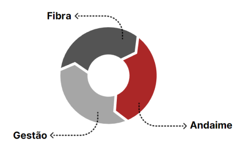

infraestrutura e equipe

A infraestrutura

A FIBRASULRS Manutenção Industrial Eireli dispõe de uma equipe de profissionais altamente qualificada para a realização dos trabalhos propostos. Nosso diferencial é a qualidade aliada a custos competitivos onde, desta forma, possibilitam a tranquilidade de nossos clientes e a certeza de um trabalho que atenda suas expectativas.

A equipe
A FIBRASULRS Manutenção Industrial Eireli possui um canteiro montado com 1200M² de área e toda infraestrutura necessária para a execução do escopo proposto.